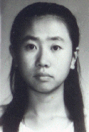

在追求理想与超越中实现全面发展
尊敬的各位领导、老师、亲爱的同学们：
大家好!
我叫丁杰，是东北师范大学教育科学学院99级硕士研究生，我的报告题目是《在追求理想与超越中实现全面发展》。
我出生于吉林省农安县一个普通但却幸福的家庭。父母都是善良、能干，而且极疼爱孩子的人。在家人的呵护下，我拥有过最快乐的童年。从小到大我的学习成绩一直很好，可是由于体弱多病，15岁那年我放弃高中考取了中师。虽然父母很羡慕别人家的孩子上大学，但他们对我的要求却是健健康康、快快乐乐就行。可样样不服输、样样想做到更好的我，却坚定地投入到每一项我认为有意义的学习和工作之中。为了达到“读、说、写、算、歌、舞、书、画”样样过关的
大家好!
我叫丁杰，是东北师范大学教育科学学院99级硕士研究生，我的报告题目是《在追求理想与超越中实现全面发展》。
我出生于吉林省农安县一个普通但却幸福的家庭。父母都是善良、能干，而且极疼爱孩子的人。在家人的呵护下，我拥有过最快乐的童年。从小到大我的学习成绩一直很好，可是由于体弱多病，15岁那年我放弃高中考取了中师。虽然父母很羡慕别人家的孩子上大学，但他们对我的要求却是健健康康、快快乐乐就行。可样样不服输、样样想做到更好的我，却坚定地投入到每一项我认为有意义的学习和工作之中。为了达到“读、说、写、算、歌、舞、书、画”样样过关的
师范技能要求和学科要求，师范四年中我没敢停下脚步。在老师的关心、帮助下，我以优异的成绩完成了所有学业，八次考试五次全校第一，是唯一一名单科不低于85分，平均分超过90分的学生。我还承担了多项工作，参加了播音、主持、舞蹈、礼仪、写作等多项活动，以培养自己的能力。虽然经常忙得吃不上饭，睡不上觉，也偷偷掉过许多眼泪，可在慈父般的班主任“你能做得更好”的鼓励和支持下，我最终还是坚持了下来。我想正是因为师范这个特殊环境中的特殊要求和它所提供的种种机会才有了我的发展。1995年，在我捧回吉林省中师生语言文字基本功大赛的获奖证书时，我以总分第一的成绩被保送到东北师范大学学习。现在回想起来，我仍深深感谢我的母校，它给了我太多的积淀，帮我打下了坚实的基础。扶着我从一个15岁的孩子成长为青年。毕业时，恩师在我的留言册上写道：“你是91．4班的骄傲，也是全校的骄傲。”我含着泪把这句话一读再读，我知道面对如此厚望，理想与超越必将成为我生活的全部。
1995年9月，我带着对未来的美好憧憬，走进了大学校园。面对这来之不易的学习机会，我决心从头做起，从超越自我做起。大学1400多个日子，我几乎没有过午休，每天都是早早到教室，晚上整栋教学楼只剩我一个人时再离开，夜里还要在走廊昏黄的灯光下补充必备的知识。一年四季，我永远是全年级最后一个休息的人。就这样，功夫不负有心人，每次考试成绩我都排在专业最前列。四年下来，我已是教育原理专业总成绩第一名。当然，学习中也有许许多多困难。那时，对我来说，最大的难题要数外语。中师范没有系统的学过外语，所以刚入校时我是初中的水平来读大学的英语课程。那时是学一课，哭一次，因为课课都不会。有的同学劝我说“你们保送生不能和我们比”，可我心里就不信，为什么一样的学生不能一样的比较。我下了狠心，用一个月的时间学完了高中三年的课程，之后转到四级班学习。当时说不过四级不给学位证，我就是要用学位证作赌注看我能不能学好英语。大学英语四级分册让我翻得厚了一倍，每一课书都让我记得密密麻麻，单词背会、语法弄懂，实在不懂的连课文都背下来，课上、课下、走路我都想想新学的东西。就这样一步步从难到易，大二上半学期我以所在英语四级班第一的成绩结束了大学的英语学习并顺利的通过了国家四级考试。大三上半学期，我把英语六级作为自己的新目标，那年，我听了数不清的英语磁带，背了整整一本英语词汇。为了向六级进军，所有的娱乐我都放弃了，当时最大的休息就是看看富有感情色彩的汉字。那次考试，我又以全系第一的成绩获得国家六级证书。我始终坚信一句话，那就是“没有比人更高的山，没有比脚更长的路”。只要不轻言放弃，不放弃希望、不放弃理想，就一定能够有所收获。中师宽厚的基础和师大提供的种种良好条件，使我不满足于单一的发展，在抓好学习的同时，我参加了许多活动，开始多方面发展自己的能力。算起来，从第一次登台到今天我已经主持了近百场的大型演出，而英语、论文、辩论、技能比赛也已参加了近百次。在一次又一次的活动中，我一点一滴的完善自己，在大学这个精英群体里，向着全面发展努力。
1997年冬天，在教育部的安排下，东北四所部属高校与台湾十几所高校联合举办海峡两岸大学生冬令营的大型联谊活动。这是建国以来，北方高校与台湾高校之间规模最大的交流活动。因此，各方面都非常重视。对我个人来讲，这也是我参加过最大的一次活动。在接手主持人和大陆方面学生组长工作之初我对怎样安排台湾同学喜欢的节目、怎样与意识形态截然不同的台湾同学相处几乎没有一个明确的概念。但我有一个想法，那就是介绍祖国最美丽的景色，做大陆最优秀的学生代表。这个营队一共有40名台湾同学，都是20多岁的在校大学生。通过接触才知道，这些70年代台湾经济复苏后成长起来的一代人，对祖国大陆的认识还停留在上一代或上两代的认识基础上。接机回宾馆的路上，看着急匆匆驶过的车水马龙，有的台湾同学惊讶地告诉我，他一直认为中国北方的主要交通工具是骆驼。还有的同学住入宾馆后，不用宾馆的洗手间，而是要去他心里的中式厕所——一个简单的茅屋。他们的疑问和要求让我心里百感交集，远在海峡那一边的中国人居然不了解中国。当时我笑着告诉他们，我的祖辈都没在街上看过骆驼；在城市里长大的年轻人也几乎没有见过他们心中的露天厕所。大陆和他们所到过的其他国家一样，并不是他们想象中那样的原始和落后。面对许多诸如此类的问题，在游览和各项活动中，我不但承担起照顾台湾同学的任务，而且和老师、同学们一起为他们介绍祖国风貌，为改变那些台湾学子头脑中的“原始”印象，做着点点滴滴的努力。长春、吉林、哈尔滨几天的观光中，雪雕园、冰雕园、宏伟的圣•索菲娅教堂、琳琅满目的步行街、糜鹿、银狐、水貂，自然的与社会的、历史的与现代的信息使他们重新认识了东北这块土地。而老师、我和其他大陆同学，为了悉心照顾台湾同学，每天要工作十五、六个小时。在北大湖滑雪场上山时，一名台湾同学与我搭伴坐在缆车上，当缆车渐行渐上，顶着积雪的树木在我们脚下渐渐缩小时，我可以感受到身边的台湾同学几日来积聚的、对辽阔的祖国的激动心情。山顶上气温特别低，我在及膝的雪地里给怕冷的台湾同学暖腿，双脚都冻麻了；另一位大陆同学把自己的厚围巾给了一位台湾的女孩子，却把自己的耳朵冻伤了。当我和几名同学赶忙上前，用雪给他搓耳朵时，台湾同学哭了。每天，我和同学们都像陀螺一样高速运转，用最饱满的热情面对每一个人。机场分别时，台湾同学紧紧抱着我们不肯上飞机，好多同学泪流满面，泣不成声。大陆学生的感情与付出使他们留恋这个地方，虽然人无法留下，可我们让他们把心永远留在了东北。后来，台湾同学在给我的来信中说：“我去过许多地方，可我最喜欢东北，因为东北有像你一样的人。”那一刹那，我很自豪，我想这次活动的最大意义不仅让我懂得了在一个团体中如何进行组织与协调工作，更让我在沟通人与人情感、沟通两岸情感中尽了自己一份心力，让我与同学们有了一份让台湾同学说出“我爱中国”的期待。
1998年暑假，中国遭遇了百年不遇的洪涝灾害，全国上下都投入到抗洪抢险之中。我作为东北师范大学“红烛艺术团”的成员之一，假期临危受命，赴白城抗洪抢险第一线慰问演出，又一个挑战摆在了我的面前。当时我正在生病，身体虚得连话也不想多说，可这样的活动我一定要去。连日被暴风雨侵袭，路上的车辙深得就像一条条深沟，颠得我直想昏过去。可在下车的一瞬间，当我看到还没有我大的小战士和本应该退伍却坚决留下准备用鲜血和生命报效祖国的老兵，我知道，我们必须要做最好的节目，给他们最大的快乐。当我强忍着不适微笑着走上仅有两脚宽的大坝，漫天的水浪就在我身后荡漾。演出时，灌了铅的双脚不时地向水里滑去，可我的脸上却始终挂着最灿烂的笑容。节目进行一半时，战士喊着响亮的号子，要一个涨红了脸的新兵与同学合唱一曲《纤夫的爱》，台上、台下顿时笑闹成一团，混乱中几个战士挤到了坝下，我以为他们要我也合作一首歌曲，但谁知，一个战士却把救生衣脱下来给我。看着他们憨憨的笑，那桔红的衣裳像一道热浪把我的泪从心里涌到了眼眶。记得抗洪首长说，险情严重时，他们拼了命似的24小时不休息，洪水暂时退去时，他们就躺在泥泞的坝上睡一觉。平常，不但要筑堤还要开着救生艇去一寸寸巡逻。难道他们不累吗?不，他们有的还是孩子啊，可就在这休息的片刻，他们想到的还是别人。尤其看到满眼血丝、满身尘土的战士大声地与我们一唱一和，那干裂的嘴唇渗出点点血珠时，我才深深地感悟到，“超越”其实就藏在人的精神里。只要不低头，就没有人做不到的事情。整场演出，我精神饱满，与战士们在这已被洪水淹没了一半的小山村构筑快乐。当一阵又一阵的冷汗终于把我浸透时，几百名欢呼的战士簇拥着我，留下了我永生难忘的一瞬。我一直把此行看作我的生命之旅，因为它让我懂得许多超越生命本身的东西。1998年秋，我国辩论赛最高水平的代表之一——上海教育电视台举办的“全国名校大学生辩论赛”邀请香港中文大学、南开大学、华中理工大学、华南理工大学、北京科技大学、上海大学、福州大学和东北师范大学参加第四届关于海洋、物种、城市化、知识经济等人类性问题的辩论比赛。这是一次名牌高校之间的综合实力的较量，同时也是一次智慧与文化的较量，因此，各高校都投入了大量的人力、物力、财力，要在这世纪末的辩台上一争高下，进而扩展学校在全国范围内的影响。当时，东北师范大学辩论风气还没有形成，对上海新赛制一无所知，更没有参加过全国性大赛，这与其它各队比起来，无疑是明显的劣势。但师大人的全力付出和为师大荣誉而战的精神却成为我们进军上海的动力。当初，师大应邀参赛的消息在校内一经公布，全校共有几百名同学踊跃应征，考核共分笔试、口试、心理测试、实战模拟四个环节，作为主持辩论会场的我，也参与其中。可能是多年参加活动练就的良好心理素质和流畅的表达能力吸引了评委，在最终决定留下的11名辩手里，我成了其中最意外、也是最戏剧化的一个。但当我提着日常用品走进封闭式集训队大门时，我意识到一个新的领域之门于一个偶然的机会在我面前展开。做一名出色的辩手成为我3个月生活的奋斗目标。辩论队是高强度、高密度的训练基地。3个月里，学校先后为我们安排了哲学、生物、演讲、辩论等专家20多人，加上后期赴青岛海洋大学时外请的海洋专家，平均每名队员至少有3名教练；从图书馆和长春市各大书店收集的书有几百本，平均每人应看百本左右；从形体训练到发音朗诵，从专业知识讲座到校内、外辩论，近百天的集训生活每天都是从早6：00到晚12：00的12小时工作制。一百天里，我们要掌握专业人员可能要用更长时间来掌握的内容。巨大的知识空间和所有专家、教练以及全校师生的无私付出，使我与队友在拼命努力的同时也承受了巨大的身心压力。那一段，心里不知为什么，真是特别脆弱。在我们倾尽全力准备了一次队内比赛以后，通过录像一放出来，表情、手势、语言、逻辑、配合，样样惨不忍睹。教练和领队没有过多地指责我们，但他们的失望溢于言表。那天晚上，全队失声痛哭。但每个人都知道悲伤解决不了任何问题，既然明确了自己的不足，就应该更加努力，才能做得更好。就这样，我和队友又把学习时间延长了几个小时，到后来，全队甚至把行李都搬到了训练室里。在与吉大对阵的前一天晚上，我坐在训练室里一遍又一遍地修改辩词，设计自由辩论的问题。身边的队友渐渐地进入了梦乡，当我看到东方的曙光在我面前一点点变亮时，我为自己与队友喝彩，为彻夜不眠的教练与领队喝彩。那一次，我们赢得了对手真诚的掌声。队内一对一、二对二、三对三的辩论、辩论队与各系队的辩论、走出校门与各校队的辩论，每准备一次辩论都是一次磨砺，是一种煎熬。在赴上海之前，又经历了两次残酷的淘汰，被选为场上队长的我与另外三名同学和教练一起踏上了开往上海的列车。比赛大幕于到达的第二天拉开，我校和华南理工大学打响了开赛的第一枪。当时上海的报纸称之为“东北虎遇上华南虎”，结果难以判定。在经历了3个月的汗水与泪水之后，大家的心态反而很平和。教练告诉我们，拼了，不要去想胜负。整场比赛我们都抱着这个念头，死守我方阵地，寻找对方破绽，一点一滴扩大战果。这一场我们以6：1的比分战胜对手。第二场，我们遇到了几次全国辩论大赛的冠军——华中理工大学。针对对手情况，全队人员连夜修改辩词。辩手瞪着布满血丝的眼睛听教练面授机宜，50多岁的张书记一直陪着我们到深夜。当凌晨2：00大家拿着定好的辩词各自背稿时，三辩坐在马桶盖上睡着了。这一场我们又以6：1的比分击败了对手。决赛，在我校与南开大学之间展开。因为从没有想过会进入决赛。除辩词准备好外，我们一无所有。领队带着我和替补队员打车到华东师大图书馆，收集最新资料。当我们忙着设计盘问和自由辩论时，对方又派了一名城市化专家乘飞机赶过来，专程与我们辩论城市化问题。这一场比赛艰苦卓绝。双方拼尽全力不敢有丝毫疏忽。连续几个月超强度的运转，我与队友非常疲惫，但我们咬着牙作战，只求尽心尽力。当硝烟散去，著名作家余秋雨为我们点评时，我的大脑出现了短暂的空白，只觉得不用激烈地思考问题就是一种享受。最后，在宣布结果的紧张时刻，辩论主席非常优雅地接过了评判结果，以抑扬顿挫的声调宣布：“本次大赛的冠军为：——正方：东北师范大学。丁杰是本次比赛的“优秀辩手”时，掌声雷动，看着耀眼的灯光和为之付出努力的所有人。我明白了在追求中信念与执著的重要。在大学期间我参加的活动确实很多，仅拿一个学期为例，就有：四月的“风帆杯”辩论赛、五月的交谊舞大赛、六月的“庆七•一”电视演讲赛、全国高师运动会、七月的通化部队慰问演出，送文化下乡等等。往往一个活动还没结束，下一个活动又接上来。但我又是一名普通学生和一名学生干部。在搞好各项活动的同时，我抓紧时间学习，培养自己的专业技能，并带领团支部成员完善团的阵地建设，以“形象工程”讨论、社区服务等多种形式开展团的工作，我把工作做得有声有色。
大学四年中，我还连续四年获“人民奖学金”；连续四年被评为“优秀团员”、“优秀团干部”、“优秀学生干部”、“标兵团员”；连续二年获东北师大“教师技能十佳”称号；1998年被评为东北师范大学“专业学习十佳”，东北师范大学“社会实践先进个人”，并获宝钢集团颁发的“宝钢奖学金”。这一年，我光荣地加入中国共产党，并被免试送入东北师范大学教育科学学院就读研究生。1999年，我被评为“长春市十佳大学生”、“吉林省优秀大学生”、“全国优秀大学生。”现在，我在导师的指导下开始研究教育基本原理，并加入了东北师大“女性研究中心”，探索另一领域的有关课题。我不断充实着自己是因为我觉得紧迫，生活不会等我，我稍一停顿就会被远远甩下。你会外语别人会计算机，你会计算机别人有能力，当你去发展能力时别人已经有了更高的想法，你要想跟住时代，适应不断变化的社会需求，就只有自己不断地努力。生活没有终点，时光流转，每一天都是最初奋斗的日子，大学四年中脚步匆匆是因为我懂得坚强、努力，懂得人生最灵魂的东西就在于在努力中获得自信与尊严，当一项项荣誉到来时，我觉得生活如此眷顾于我是因为我认认真真地对待生活并永远为那即将到来的机会做着准备。过去的是苦是乐已不重要，重要的是将来，面对将来我们如何把握？这才是最难的，也是我们最应该倾心相待的。希望每一位同学在追求理想与超越中都能做的比我更好。
1995年9月，我带着对未来的美好憧憬，走进了大学校园。面对这来之不易的学习机会，我决心从头做起，从超越自我做起。大学1400多个日子，我几乎没有过午休，每天都是早早到教室，晚上整栋教学楼只剩我一个人时再离开，夜里还要在走廊昏黄的灯光下补充必备的知识。一年四季，我永远是全年级最后一个休息的人。就这样，功夫不负有心人，每次考试成绩我都排在专业最前列。四年下来，我已是教育原理专业总成绩第一名。当然，学习中也有许许多多困难。那时，对我来说，最大的难题要数外语。中师范没有系统的学过外语，所以刚入校时我是初中的水平来读大学的英语课程。那时是学一课，哭一次，因为课课都不会。有的同学劝我说“你们保送生不能和我们比”，可我心里就不信，为什么一样的学生不能一样的比较。我下了狠心，用一个月的时间学完了高中三年的课程，之后转到四级班学习。当时说不过四级不给学位证，我就是要用学位证作赌注看我能不能学好英语。大学英语四级分册让我翻得厚了一倍，每一课书都让我记得密密麻麻，单词背会、语法弄懂，实在不懂的连课文都背下来，课上、课下、走路我都想想新学的东西。就这样一步步从难到易，大二上半学期我以所在英语四级班第一的成绩结束了大学的英语学习并顺利的通过了国家四级考试。大三上半学期，我把英语六级作为自己的新目标，那年，我听了数不清的英语磁带，背了整整一本英语词汇。为了向六级进军，所有的娱乐我都放弃了，当时最大的休息就是看看富有感情色彩的汉字。那次考试，我又以全系第一的成绩获得国家六级证书。我始终坚信一句话，那就是“没有比人更高的山，没有比脚更长的路”。只要不轻言放弃，不放弃希望、不放弃理想，就一定能够有所收获。中师宽厚的基础和师大提供的种种良好条件，使我不满足于单一的发展，在抓好学习的同时，我参加了许多活动，开始多方面发展自己的能力。算起来，从第一次登台到今天我已经主持了近百场的大型演出，而英语、论文、辩论、技能比赛也已参加了近百次。在一次又一次的活动中，我一点一滴的完善自己，在大学这个精英群体里，向着全面发展努力。
1997年冬天，在教育部的安排下，东北四所部属高校与台湾十几所高校联合举办海峡两岸大学生冬令营的大型联谊活动。这是建国以来，北方高校与台湾高校之间规模最大的交流活动。因此，各方面都非常重视。对我个人来讲，这也是我参加过最大的一次活动。在接手主持人和大陆方面学生组长工作之初我对怎样安排台湾同学喜欢的节目、怎样与意识形态截然不同的台湾同学相处几乎没有一个明确的概念。但我有一个想法，那就是介绍祖国最美丽的景色，做大陆最优秀的学生代表。这个营队一共有40名台湾同学，都是20多岁的在校大学生。通过接触才知道，这些70年代台湾经济复苏后成长起来的一代人，对祖国大陆的认识还停留在上一代或上两代的认识基础上。接机回宾馆的路上，看着急匆匆驶过的车水马龙，有的台湾同学惊讶地告诉我，他一直认为中国北方的主要交通工具是骆驼。还有的同学住入宾馆后，不用宾馆的洗手间，而是要去他心里的中式厕所——一个简单的茅屋。他们的疑问和要求让我心里百感交集，远在海峡那一边的中国人居然不了解中国。当时我笑着告诉他们，我的祖辈都没在街上看过骆驼；在城市里长大的年轻人也几乎没有见过他们心中的露天厕所。大陆和他们所到过的其他国家一样，并不是他们想象中那样的原始和落后。面对许多诸如此类的问题，在游览和各项活动中，我不但承担起照顾台湾同学的任务，而且和老师、同学们一起为他们介绍祖国风貌，为改变那些台湾学子头脑中的“原始”印象，做着点点滴滴的努力。长春、吉林、哈尔滨几天的观光中，雪雕园、冰雕园、宏伟的圣•索菲娅教堂、琳琅满目的步行街、糜鹿、银狐、水貂，自然的与社会的、历史的与现代的信息使他们重新认识了东北这块土地。而老师、我和其他大陆同学，为了悉心照顾台湾同学，每天要工作十五、六个小时。在北大湖滑雪场上山时，一名台湾同学与我搭伴坐在缆车上，当缆车渐行渐上，顶着积雪的树木在我们脚下渐渐缩小时，我可以感受到身边的台湾同学几日来积聚的、对辽阔的祖国的激动心情。山顶上气温特别低，我在及膝的雪地里给怕冷的台湾同学暖腿，双脚都冻麻了；另一位大陆同学把自己的厚围巾给了一位台湾的女孩子，却把自己的耳朵冻伤了。当我和几名同学赶忙上前，用雪给他搓耳朵时，台湾同学哭了。每天，我和同学们都像陀螺一样高速运转，用最饱满的热情面对每一个人。机场分别时，台湾同学紧紧抱着我们不肯上飞机，好多同学泪流满面，泣不成声。大陆学生的感情与付出使他们留恋这个地方，虽然人无法留下，可我们让他们把心永远留在了东北。后来，台湾同学在给我的来信中说：“我去过许多地方，可我最喜欢东北，因为东北有像你一样的人。”那一刹那，我很自豪，我想这次活动的最大意义不仅让我懂得了在一个团体中如何进行组织与协调工作，更让我在沟通人与人情感、沟通两岸情感中尽了自己一份心力，让我与同学们有了一份让台湾同学说出“我爱中国”的期待。
1998年暑假，中国遭遇了百年不遇的洪涝灾害，全国上下都投入到抗洪抢险之中。我作为东北师范大学“红烛艺术团”的成员之一，假期临危受命，赴白城抗洪抢险第一线慰问演出，又一个挑战摆在了我的面前。当时我正在生病，身体虚得连话也不想多说，可这样的活动我一定要去。连日被暴风雨侵袭，路上的车辙深得就像一条条深沟，颠得我直想昏过去。可在下车的一瞬间，当我看到还没有我大的小战士和本应该退伍却坚决留下准备用鲜血和生命报效祖国的老兵，我知道，我们必须要做最好的节目，给他们最大的快乐。当我强忍着不适微笑着走上仅有两脚宽的大坝，漫天的水浪就在我身后荡漾。演出时，灌了铅的双脚不时地向水里滑去，可我的脸上却始终挂着最灿烂的笑容。节目进行一半时，战士喊着响亮的号子，要一个涨红了脸的新兵与同学合唱一曲《纤夫的爱》，台上、台下顿时笑闹成一团，混乱中几个战士挤到了坝下，我以为他们要我也合作一首歌曲，但谁知，一个战士却把救生衣脱下来给我。看着他们憨憨的笑，那桔红的衣裳像一道热浪把我的泪从心里涌到了眼眶。记得抗洪首长说，险情严重时，他们拼了命似的24小时不休息，洪水暂时退去时，他们就躺在泥泞的坝上睡一觉。平常，不但要筑堤还要开着救生艇去一寸寸巡逻。难道他们不累吗?不，他们有的还是孩子啊，可就在这休息的片刻，他们想到的还是别人。尤其看到满眼血丝、满身尘土的战士大声地与我们一唱一和，那干裂的嘴唇渗出点点血珠时，我才深深地感悟到，“超越”其实就藏在人的精神里。只要不低头，就没有人做不到的事情。整场演出，我精神饱满，与战士们在这已被洪水淹没了一半的小山村构筑快乐。当一阵又一阵的冷汗终于把我浸透时，几百名欢呼的战士簇拥着我，留下了我永生难忘的一瞬。我一直把此行看作我的生命之旅，因为它让我懂得许多超越生命本身的东西。1998年秋，我国辩论赛最高水平的代表之一——上海教育电视台举办的“全国名校大学生辩论赛”邀请香港中文大学、南开大学、华中理工大学、华南理工大学、北京科技大学、上海大学、福州大学和东北师范大学参加第四届关于海洋、物种、城市化、知识经济等人类性问题的辩论比赛。这是一次名牌高校之间的综合实力的较量，同时也是一次智慧与文化的较量，因此，各高校都投入了大量的人力、物力、财力，要在这世纪末的辩台上一争高下，进而扩展学校在全国范围内的影响。当时，东北师范大学辩论风气还没有形成，对上海新赛制一无所知，更没有参加过全国性大赛，这与其它各队比起来，无疑是明显的劣势。但师大人的全力付出和为师大荣誉而战的精神却成为我们进军上海的动力。当初，师大应邀参赛的消息在校内一经公布，全校共有几百名同学踊跃应征，考核共分笔试、口试、心理测试、实战模拟四个环节，作为主持辩论会场的我，也参与其中。可能是多年参加活动练就的良好心理素质和流畅的表达能力吸引了评委，在最终决定留下的11名辩手里，我成了其中最意外、也是最戏剧化的一个。但当我提着日常用品走进封闭式集训队大门时，我意识到一个新的领域之门于一个偶然的机会在我面前展开。做一名出色的辩手成为我3个月生活的奋斗目标。辩论队是高强度、高密度的训练基地。3个月里，学校先后为我们安排了哲学、生物、演讲、辩论等专家20多人，加上后期赴青岛海洋大学时外请的海洋专家，平均每名队员至少有3名教练；从图书馆和长春市各大书店收集的书有几百本，平均每人应看百本左右；从形体训练到发音朗诵，从专业知识讲座到校内、外辩论，近百天的集训生活每天都是从早6：00到晚12：00的12小时工作制。一百天里，我们要掌握专业人员可能要用更长时间来掌握的内容。巨大的知识空间和所有专家、教练以及全校师生的无私付出，使我与队友在拼命努力的同时也承受了巨大的身心压力。那一段，心里不知为什么，真是特别脆弱。在我们倾尽全力准备了一次队内比赛以后，通过录像一放出来，表情、手势、语言、逻辑、配合，样样惨不忍睹。教练和领队没有过多地指责我们，但他们的失望溢于言表。那天晚上，全队失声痛哭。但每个人都知道悲伤解决不了任何问题，既然明确了自己的不足，就应该更加努力，才能做得更好。就这样，我和队友又把学习时间延长了几个小时，到后来，全队甚至把行李都搬到了训练室里。在与吉大对阵的前一天晚上，我坐在训练室里一遍又一遍地修改辩词，设计自由辩论的问题。身边的队友渐渐地进入了梦乡，当我看到东方的曙光在我面前一点点变亮时，我为自己与队友喝彩，为彻夜不眠的教练与领队喝彩。那一次，我们赢得了对手真诚的掌声。队内一对一、二对二、三对三的辩论、辩论队与各系队的辩论、走出校门与各校队的辩论，每准备一次辩论都是一次磨砺，是一种煎熬。在赴上海之前，又经历了两次残酷的淘汰，被选为场上队长的我与另外三名同学和教练一起踏上了开往上海的列车。比赛大幕于到达的第二天拉开，我校和华南理工大学打响了开赛的第一枪。当时上海的报纸称之为“东北虎遇上华南虎”，结果难以判定。在经历了3个月的汗水与泪水之后，大家的心态反而很平和。教练告诉我们，拼了，不要去想胜负。整场比赛我们都抱着这个念头，死守我方阵地，寻找对方破绽，一点一滴扩大战果。这一场我们以6：1的比分战胜对手。第二场，我们遇到了几次全国辩论大赛的冠军——华中理工大学。针对对手情况，全队人员连夜修改辩词。辩手瞪着布满血丝的眼睛听教练面授机宜，50多岁的张书记一直陪着我们到深夜。当凌晨2：00大家拿着定好的辩词各自背稿时，三辩坐在马桶盖上睡着了。这一场我们又以6：1的比分击败了对手。决赛，在我校与南开大学之间展开。因为从没有想过会进入决赛。除辩词准备好外，我们一无所有。领队带着我和替补队员打车到华东师大图书馆，收集最新资料。当我们忙着设计盘问和自由辩论时，对方又派了一名城市化专家乘飞机赶过来，专程与我们辩论城市化问题。这一场比赛艰苦卓绝。双方拼尽全力不敢有丝毫疏忽。连续几个月超强度的运转，我与队友非常疲惫，但我们咬着牙作战，只求尽心尽力。当硝烟散去，著名作家余秋雨为我们点评时，我的大脑出现了短暂的空白，只觉得不用激烈地思考问题就是一种享受。最后，在宣布结果的紧张时刻，辩论主席非常优雅地接过了评判结果，以抑扬顿挫的声调宣布：“本次大赛的冠军为：——正方：东北师范大学。丁杰是本次比赛的“优秀辩手”时，掌声雷动，看着耀眼的灯光和为之付出努力的所有人。我明白了在追求中信念与执著的重要。在大学期间我参加的活动确实很多，仅拿一个学期为例，就有：四月的“风帆杯”辩论赛、五月的交谊舞大赛、六月的“庆七•一”电视演讲赛、全国高师运动会、七月的通化部队慰问演出，送文化下乡等等。往往一个活动还没结束，下一个活动又接上来。但我又是一名普通学生和一名学生干部。在搞好各项活动的同时，我抓紧时间学习，培养自己的专业技能，并带领团支部成员完善团的阵地建设，以“形象工程”讨论、社区服务等多种形式开展团的工作，我把工作做得有声有色。
大学四年中，我还连续四年获“人民奖学金”；连续四年被评为“优秀团员”、“优秀团干部”、“优秀学生干部”、“标兵团员”；连续二年获东北师大“教师技能十佳”称号；1998年被评为东北师范大学“专业学习十佳”，东北师范大学“社会实践先进个人”，并获宝钢集团颁发的“宝钢奖学金”。这一年，我光荣地加入中国共产党，并被免试送入东北师范大学教育科学学院就读研究生。1999年，我被评为“长春市十佳大学生”、“吉林省优秀大学生”、“全国优秀大学生。”现在，我在导师的指导下开始研究教育基本原理，并加入了东北师大“女性研究中心”，探索另一领域的有关课题。我不断充实着自己是因为我觉得紧迫，生活不会等我，我稍一停顿就会被远远甩下。你会外语别人会计算机，你会计算机别人有能力，当你去发展能力时别人已经有了更高的想法，你要想跟住时代，适应不断变化的社会需求，就只有自己不断地努力。生活没有终点，时光流转，每一天都是最初奋斗的日子，大学四年中脚步匆匆是因为我懂得坚强、努力，懂得人生最灵魂的东西就在于在努力中获得自信与尊严，当一项项荣誉到来时，我觉得生活如此眷顾于我是因为我认认真真地对待生活并永远为那即将到来的机会做着准备。过去的是苦是乐已不重要，重要的是将来，面对将来我们如何把握？这才是最难的，也是我们最应该倾心相待的。希望每一位同学在追求理想与超越中都能做的比我更好。